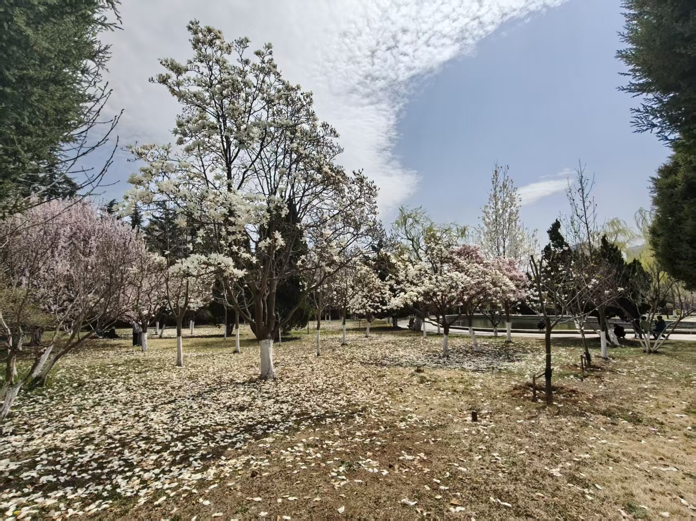
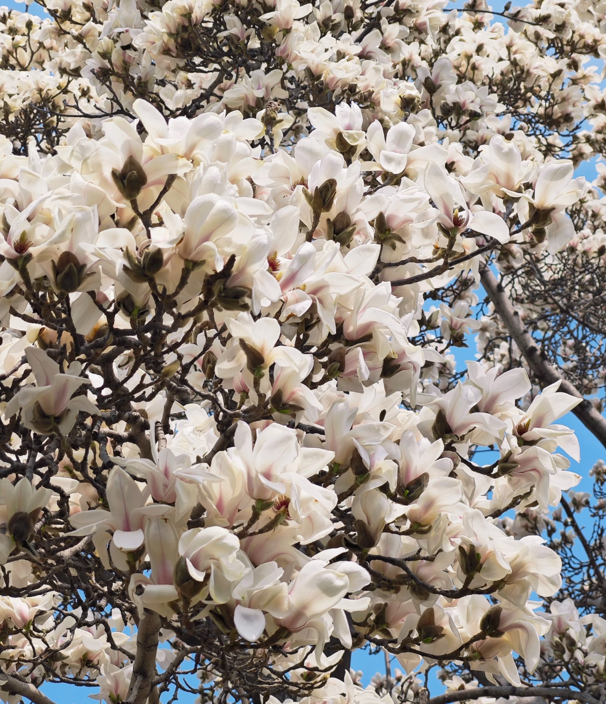
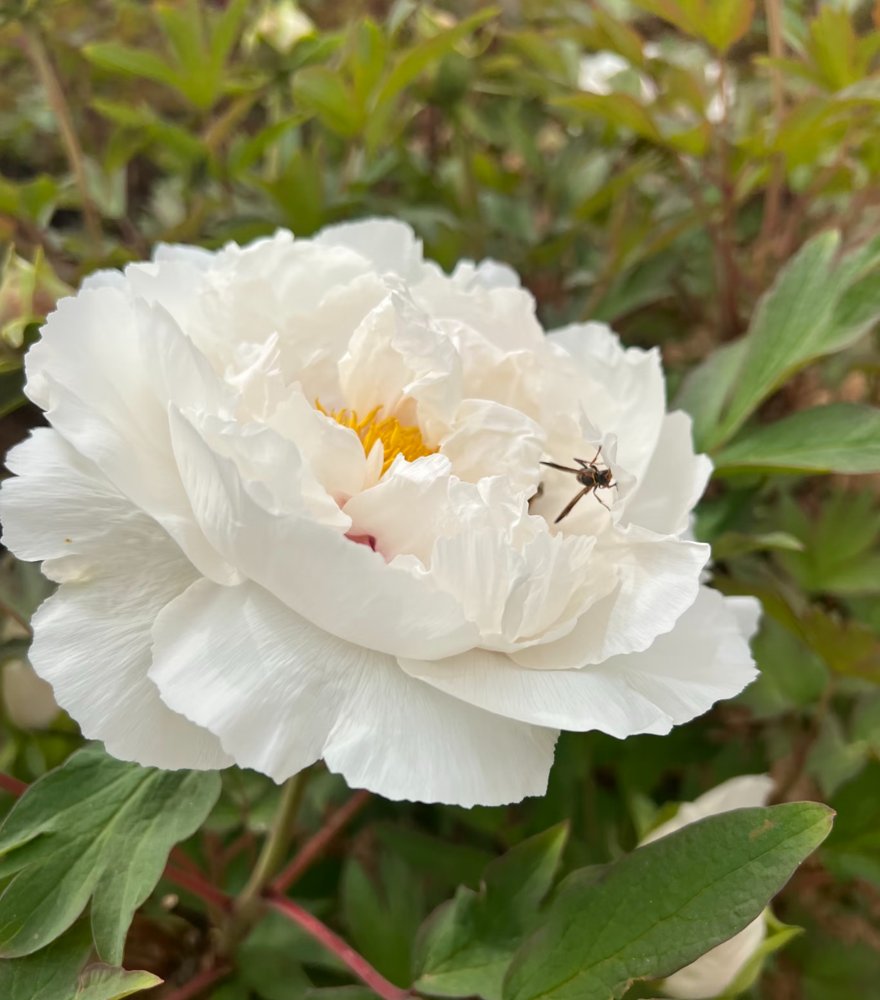
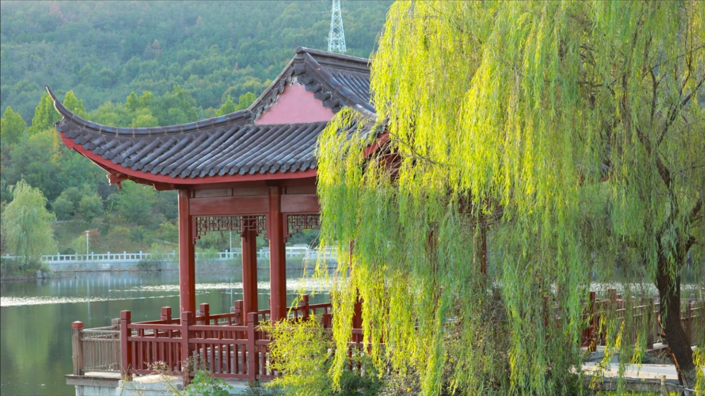
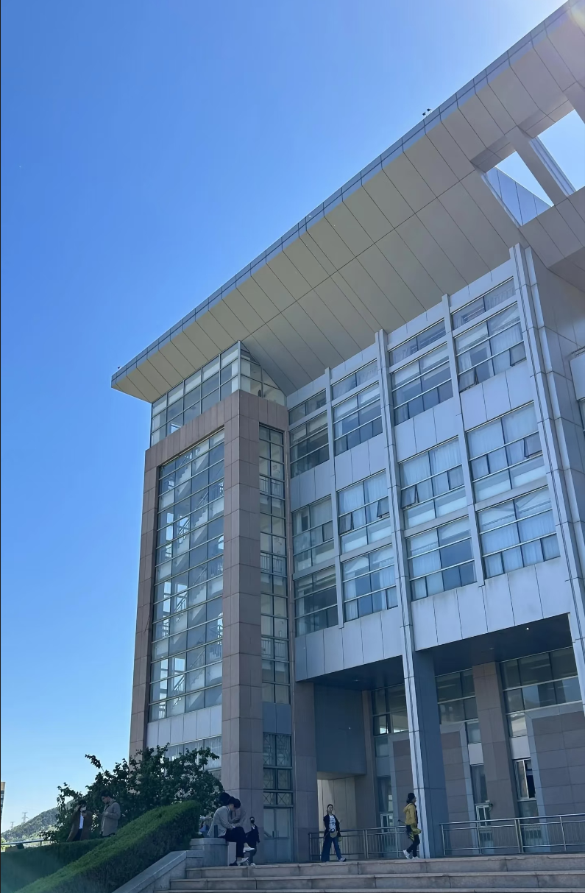
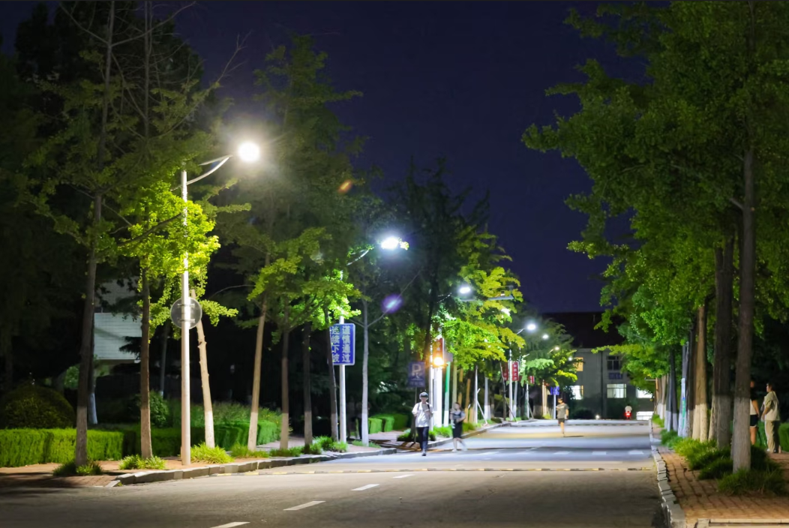

春日的校园宛如一幅徐徐展开的诗意画卷，处处流淌着生机与美好。清晨的阳光穿过枝叶的缝隙，温柔地洒在校园的小径上，微风拂过，带来花草的清甜气息，让人心旷神怡。玉兰花迎着春风悄然绽放，素白的花瓣温润如玉，满树繁花如云似雪，在阳光下透着淡淡的光晕，清雅脱俗，芳香四溢，为校园增添了几分静谧与雅致。嫩绿的新芽从枝头冒出，柳树舒展着柔软的枝条，在风中轻轻摇曳，草地间点缀着星星点点的小花，色彩柔和，清新自然。漫步在校园之中，目之所及皆是盎然春意，耳畔是清脆的鸟鸣，鼻尖萦绕着淡淡的花香，每一处角落都藏着自然的温柔与诗意，让书香满园的校园多了一份灵动与清新，仿佛置身于世外桃源，让人沉醉其中，不愿离去。
春风轻抚校园，万物复苏，处处皆是生机勃勃的景象。温暖的阳光洒满校园的每一个角落，树木抽出新的枝叶，嫩绿鲜亮，充满活力；小草破土而出，铺满整个草坪，像一块柔软的绿色地毯。花坛里的花卉次第开放，牡丹雍容华贵，花瓣层层叠叠，色彩温润，尽显大气之美；其他花草也竞相生长，与绿树相互映衬，构成了一幅和谐美丽的春日图景。清澈的微风带着草木的清香，穿梭在教学楼与林荫道之间，让整个校园都沉浸在清新舒适的氛围里。在这里，自然之美与书香之气完美融合，每一次呼吸都能感受到春天的气息，每一次驻足都能遇见动人的风景，春日校园的自然风光，不仅装点了环境，更温暖了心灵，让学习与生活都变得更加美好而惬意。




校园的人文景观承载着浓厚的文化气息与精神内涵，是校园最美的风景之一。在这里，同学们步履坚定，心怀梦想，在知识的海洋里不断探索前行。课堂上专注求知的身影，自习室里认真钻研的模样，同学间互相帮助、共同进步的温暖场景，都构成了最动人的人文画面。大家以努力为翅膀，以坚持为力量，在成长的道路上脚踏实地，奋勇向前，用青春与汗水书写属于自己的精彩篇章。校园的人文氛围不仅滋养着每一位学子的心灵，更传递着积极向上、勤学善思的精神力量，让每一个身处其中的人都能感受到成长的力量与希望，在书香与温暖中不断成为更好的自己。

